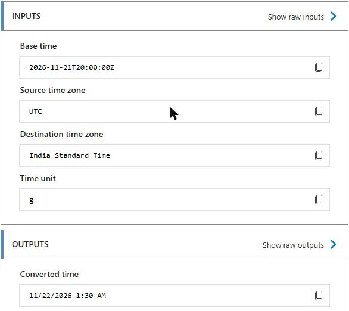
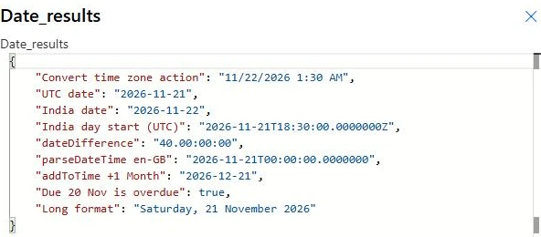
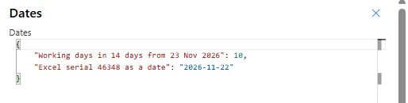

- Power Automate
- Level 2 · Working with data · 4 of 7
Dates, times and time zones: the complete guide
Flows store and calculate time in UTC. That single fact explains most date bugs: an order placed at 1:30 AM in India on 22 November is still 21 November in UTC, so a report built on UTC shows the wrong day. This guide follows one moment through every common date job.
| Section | You'll learn |
|---|---|
| 1 · One moment, two dates | UTC vs local, traced |
| 2 · Converting | The Convert time zone action and convertFromUtc |
| 3 · The start of a local day | For “today” filters |
| 4 · Formatting | Format codes |
| 5 · Date maths | Adding, differences, overdue checks |
| 6 · Dates that aren't ISO | parseDateTime, Excel serials |
| 7 · Working days | Filter array over a range |
1 · One moment, two dates
2026-11-21T20:00:00Z (Z = UTC).2026-11-21T20:00:00Z, shown for a team in India (UTC +5:30).The same moment
| Clock | Value | Expression |
|---|---|---|
| UTC | 2026-11-21 20:00 | formatDateTime(t, 'yyyy-MM-dd') → 2026-11-21 |
| India | 2026-11-22 01:30 | convertFromUtc(t, 'India Standard Time', 'yyyy-MM-dd') → 2026-11-22 |
Different date. A daily report for India that used UTC would file this order under the wrong day.
2 · Converting to local time
Action or expression?
convertFromUtc / convertTimeZone
g is short date and time.| Function | Use | Example |
|---|---|---|
convertFromUtc(t, zone, format?) | UTC → local | convertFromUtc(utcNow(), 'India Standard Time') |
convertToUtc(t, zone, format?) | local → UTC | local midnight → UTC |
convertTimeZone(t, from, to, format?) | any → any | 'Pacific Standard Time' → 'GMT Standard Time' |
Zones use Windows names: India Standard Time, Pacific Standard Time, GMT Standard Time. IST or UTC+5:30 fail. Windows zones handle daylight saving for you.
3 · The start of a local day
India's midnight, in UTC
convertFromUtc(t, 'India Standard Time') → 2026-11-22 01:30startOfDay(…) → 2026-11-22 00:00 (India)convertToUtc(…, 'India Standard Time') → 2026-11-21T18:30:00ZCreated ge '@{convertToUtc(startOfDay(convertFromUtc(utcNow(), 'India Standard Time')), 'India Standard Time')}'4 · Formatting
| Code | Means | Demo |
|---|---|---|
yyyy-MM-dd | ISO date | 2026-11-21 |
dd MMM yyyy | short month | 21 Nov 2026 |
dddd, dd MMMM yyyy | full names | Saturday, 21 November 2026 |
HH:mm | 24-hour | 20:00 |
hh:mm tt | 12-hour | 08:00 PM |
g | short date + time | 11/21/2026 8:00 PM |
Capital MM is month; small mm is minutes. Format only for display, at the end.
5 · Date maths
The Dates scope
| Expression | Result |
|---|---|
addToTime(t, 1, 'Month', 'yyyy-MM-dd') | 2026-12-21 |
addDays(t, -7) | a week earlier |
dateDifference('2026-11-21', '2026-12-31') | "40.00:00:00" days.hours:minutes:seconds |
less(ticks('2026-11-20T00:00:00Z'), ticks(t)) | true due date has passed |
formatDateTime(t, 'dddd, dd MMMM yyyy') | Saturday, 21 November 2026 |

int(first(split(dateDifference(start, end), '.')))| Piece | What it does |
|---|---|
dateDifference | “40.00:00:00” |
split(…, '.') then first | “40” |
int | 40 as a number. Under a day there's no dot: guard with contains. |
Comparing with ticks() turns both dates into numbers, so different formats and zones compare correctly.
6 · Dates that aren't ISO
21/11/2026 from a UK form
| Expression | Result |
|---|---|
formatDateTime('21/11/2026', 'yyyy-MM-dd') | fails |
parseDateTime('21/11/2026', 'en-GB') | 2026-11-21T00:00:00 |
In function 'formatDateTime', the value provided for date time string '21/11/2026' was not valid.
The datetime string must match ISO 8601 format.parseDateTime(text, locale, format?) reads local formats; give the exact format (e.g. 'dd/MM/yyyy') when the locale is ambiguous. Excel sends dates as day numbers from 30 Dec 1899:
formatDateTime(addDays('1899-12-30', 46348), 'yyyy-MM-dd')| Piece | What it does |
|---|---|
addDays('1899-12-30', 46348) | Counts from Excel's start. |
formatDateTime | 2026-11-22 |
7 · Working days

Counting working days
range(0, 14) → 0 … 13addDays('2026-11-23', item()) each daydayOfWeek not 0 (Sun) and not 6 (Sat)?length(…) → 10From: range(0, 14)
Where: and(not(equals(dayOfWeek(addDays('2026-11-23', item())), 0)),
not(equals(dayOfWeek(addDays('2026-11-23', item())), 6)))
Watch out
- Calculate and compare in UTC; convert only for display.
utcNow()in an email shows UTC, not the reader's time.- Windows zone names only.
- Non-ISO text needs
parseDateTimefirst.
New to this? Start from the basics optional
UTC: the reference clock. India is 5 h 30 min ahead.
ISO 8601: 2026-11-21T20:00:00Z.
Common mistakes
- UTC midnight used as “today” for a local team.
mmfor month.formatDateTimeon 21/11/2026.- Comparing dates as text in different formats.